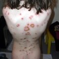

Pemphigoid
Die lineare IgA-Dermatose und die dermatitis herpetiformis Duhring gehören zu den seltenen blasenbildenden Erkrankungen. Die chronisch bullöse Dermatose des Kindesalter (CBDC= chronic bullous disease of childhood) ist die juvenile Variante der IgA-Dermatose, sie ist die häufigste Autoimmundermatose des Kindesalter (Hoeger); einer erworbenen Autoimmunerkrankung, die durch vorausgehende Infekte getriggert werden kann. Bevorzugte Stellen sind Gesicht, Ohrgegend, Kopfhaut und Anogenitalregion. Auch Stamm und Extremitäten können betroffen sein. Zu Beginn bilden sich stark juckende Erytheme, die sich zu Blasen und zu Bläschen entwickeln. Diese sind häufig rosettenförmig angeordnet, aber auch annulär und herpetiform, die Schleimhäute sind häufig befallen.
Bilder



Schließen

IgA- Dermatose-rosettenförmige Blasen, aus "dermatologische Differenzialdiagnose"
Boni E. Elewski, Urban & Fischer Verlag
Dermatitis herpetiformis Duhring - lineare IgA- Dermatose